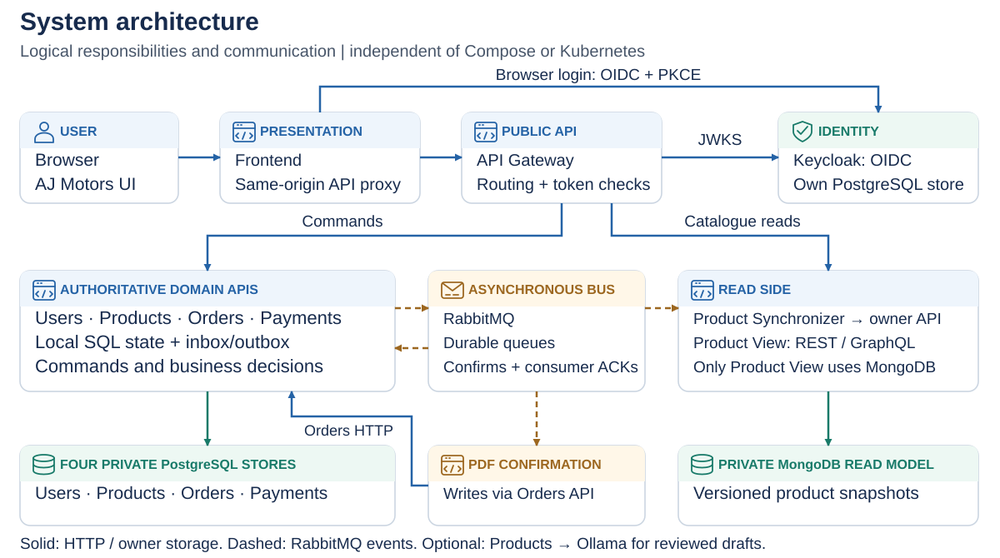
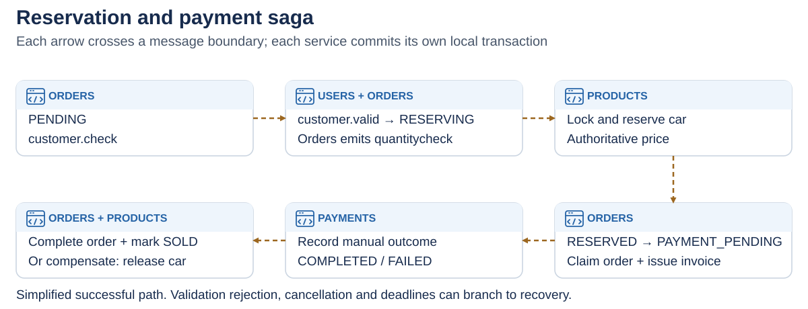
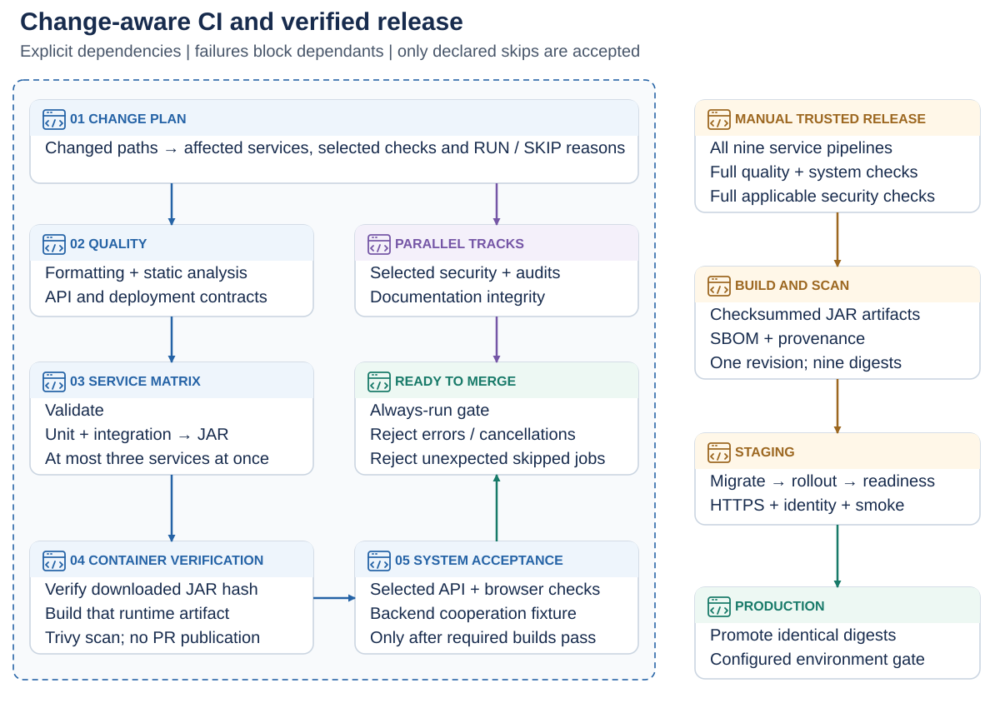
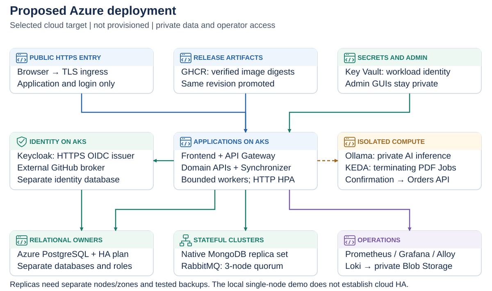

<!doctype html><html lang="en"><meta charset="utf-8"><title>AJ Motors · Mandatory Assignment 1</title><style>@page{size:13.333in 7.5in;margin:0}*{box-sizing:border-box}body{margin:0;background:#e2e8f0;font-family:Arial,sans-serif;color:#172b4d}section{position:relative;width:1280px;height:720px;background:white;margin:24px auto;padding:28px 52px;page-break-after:always;overflow:hidden}header{font-size:14px;letter-spacing:2px;color:#2563a6;font-weight:bold}h1{font-size:38px;margin:34px 0}.body{display:flex;height:470px;align-items:center}.body ul{font-size:29px;line-height:1.5;padding-left:30px;margin:0}.body li{margin:0 0 22px}.with-image ul{width:38%;font-size:22px;padding-right:30px}.with-image img{width:62%;max-height:470px;object-fit:contain}footer{position:absolute;bottom:24px;left:52px;right:52px;font-size:12px;color:#64748b}footer span{float:right}@media print{body{background:white}section{width:13.333in;height:7.5in;margin:0}}</style><section><header>MANDATORY ASSIGNMENT 1</header><h1>AJ Motors</h1><div class="body "><ul><li>Distributed car sales · architecture and delivery strategy</li><li>Ahmad Alkaseb · Jeppe Koch · Asger Bergøe · Laith Alkaseb</li><li>https://github.com/AhmadAlkaseb/aj</li></ul></div><footer>AJ MOTORS · 12 November 2026 <span>01</span></footer></section><section><header>MANDATORY ASSIGNMENT 1</header><h1>Problem and acceptance criteria</h1><div class="body "><ul><li>Coordinate customer, vehicle, order and manual payment ownership.</li><li>One car must not be reserved by two buyers.</li><li>Frontend consumes GraphQL catalogue queries and REST commands.</li><li>Latency, durability and access boundaries need explicit tests.</li></ul></div><footer>AJ MOTORS · 12 November 2026 <span>02</span></footer></section><section><header>MANDATORY ASSIGNMENT 1</header><h1>System architecture</h1><div class="body with-image"><ul><li>Five domain APIs; synchronizer and confirmation processor are additional workers.</li></ul></div><footer>AJ MOTORS · 12 November 2026 <span>03</span></footer></section><section><header>MANDATORY ASSIGNMENT 1</header><h1>Why these technologies?</h1><div class="body "><ul><li>Java 17/Javalin/Maven: consistent backend and build tooling.</li><li>PostgreSQL: owner constraints and transactions; MongoDB: catalogue snapshots.</li><li>RabbitMQ: asynchronous delivery; REST + GraphQL: commands and queries.</li><li>Compose locally; kind, Calico, HPA and KEDA for the production-like demo.</li></ul></div><footer>AJ MOTORS · 12 November 2026 <span>04</span></footer></section><section><header>MANDATORY ASSIGNMENT 1</header><h1>Communication and patterns</h1><div class="body with-image"><ul><li>AMQP coordinates reservation, payment outcomes and catalogue snapshots.</li><li>CQRS, tombstones/snapshots, idempotence and selected commutative handling.</li><li>Saga compensation, deadlines and explicit manual review.</li><li>Outbox/inbox retain work and deduplicate selected redeliveries.</li></ul></div><footer>AJ MOTORS · 12 November 2026 <span>05</span></footer></section><section><header>MANDATORY ASSIGNMENT 1</header><h1>Balanced Scrum-inspired work model</h1><div class="body "><ul><li>Four workstreams: identity; catalogue/AI; commerce; operations.</li><li>Each participant owns one stream and reviews another.</li><li>Short planning cycles, shared board, brief standups and acceptance review.</li><li>Allocation/reflection drafts need participant confirmation; no invented attendance.</li></ul></div><footer>AJ MOTORS · 12 November 2026 <span>06</span></footer></section><section><header>MANDATORY ASSIGNMENT 1</header><h1>CI/CD and testing plan</h1><div class="body with-image"><ul><li>Change plan → selected quality → affected services → images → cooperation.</li><li>Independent security/docs tracks join one strict Ready to merge gate.</li><li>Unit + integration must pass before JAR packaging.</li><li>Local results and actual GitHub runs remain different evidence.</li></ul></div><footer>AJ MOTORS · 12 November 2026 <span>07</span></footer></section><section><header>MANDATORY ASSIGNMENT 1</header><h1>Cloud, operations and versioning</h1><div class="body with-image"><ul><li>Selected cloud plan: AKS, PostgreSQL, native MongoDB and RabbitMQ.</li><li>Private identity/AI; KEDA PDF Jobs; secrets and tested recovery.</li><li>Prometheus/Grafana/Alloy/Loki; Git, Flyway, API v1 and event schema.</li><li>Cloud resources are planned, not purchased or deployed.</li></ul></div><footer>AJ MOTORS · 12 November 2026 <span>08</span></footer></section><section><header>MANDATORY ASSIGNMENT 1</header><h1>Delivery and open evidence</h1><div class="body "><ul><li>Report with included appendices; monorepo and installation procedure.</li><li>Design and implementation figures are editable repository assets.</li><li>External GitHub login needs an owned OAuth app and real browser verification.</li><li>Upload this PowerPoint, report and repository link to itsLearning.</li></ul></div><footer>AJ MOTORS · 12 November 2026 <span>09</span></footer></section></html>